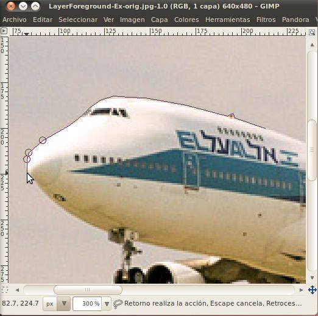
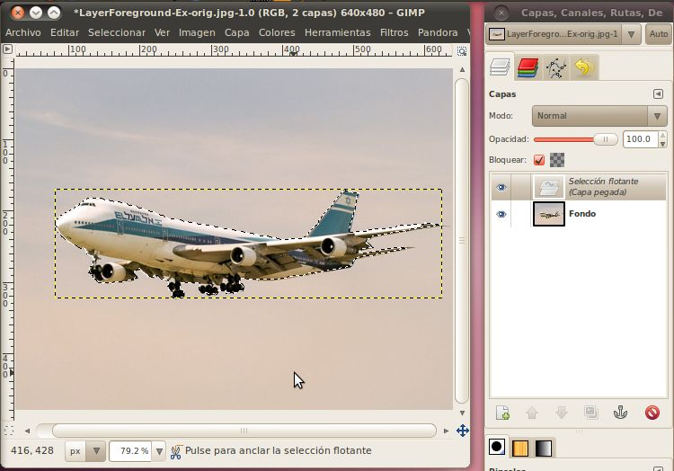
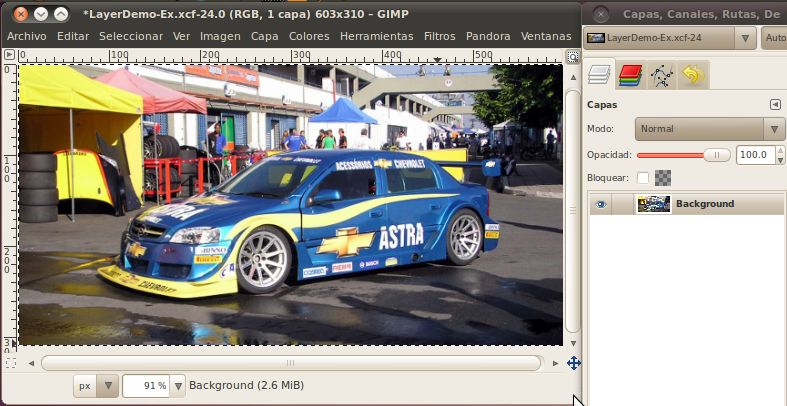
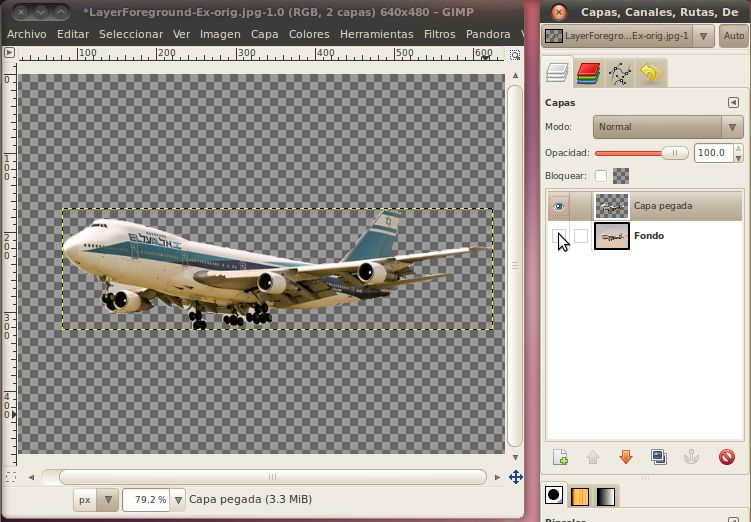
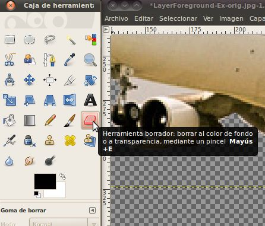
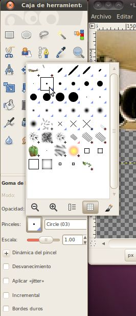
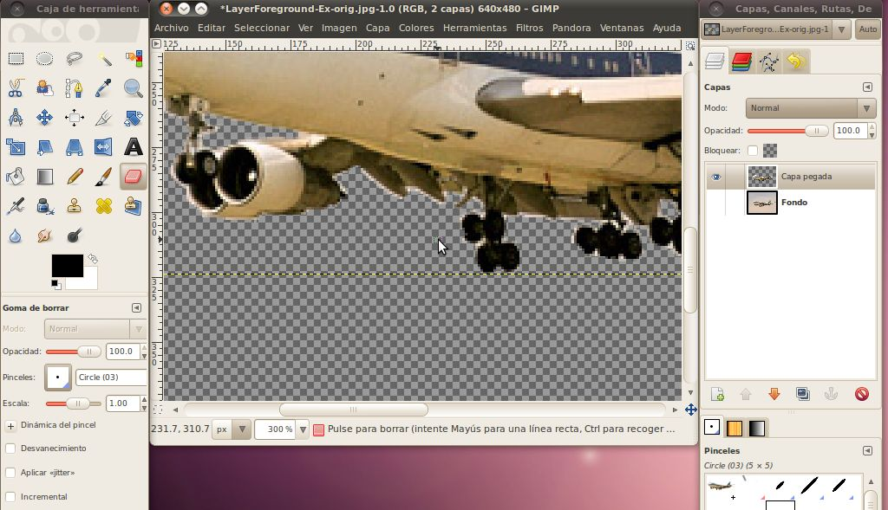
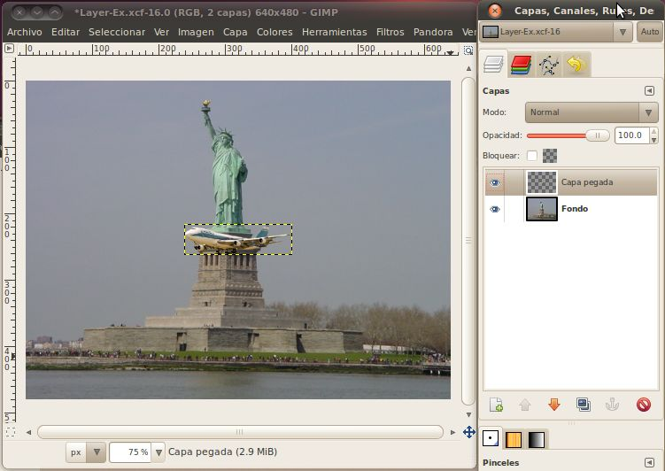
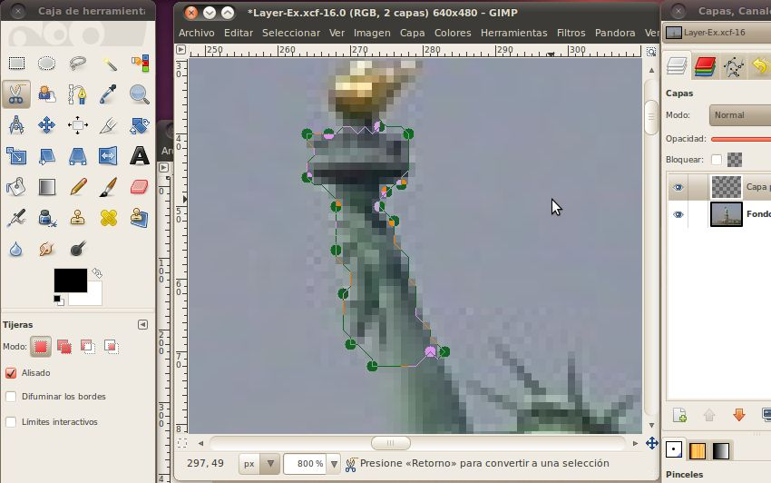
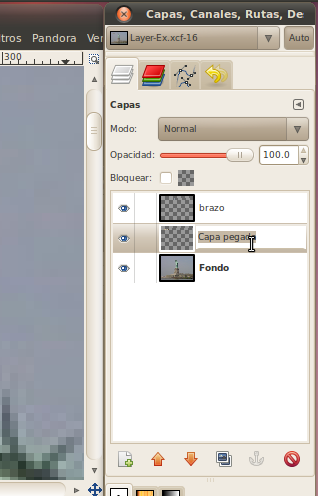

Avanzadas Selección y Capas
Ahora que tenemos algunos de los
fundamentos como cambiar el tamaño y la selecciónar áreas, vamos a hacer projectos
un poco más avanzados. En esta sección vamos a combinar dos
imágenes
distintas en una sola imagen tipo foto, que se vea como si pudiera haber sido tomada con una cámara real. Esta
es
una herramienta poderosa que puede usarse para confundir a los demás,
haciéndoles pensar que algo realmente sucedió cuando en realidad no
fue así. Muchas personas han tratado de engañar al público con
esto,
y muchos se han descubierto en el acto, como el pais de Irán, tratando de demostrar
que lanzó cuatro misiles cuando sólo lanzó tres: http://mangasverdes.es/2008/07/11/iran-lanza-misiles-con-photoshop/.
Como editor de fotos, es tu trabajo utilizar estas herramientas de
manera responsable.
Vamos a empezar tomando una foto de un
avión y poniéndola en el fondo de una imagen de la Estatua de la Libertad.
Un Avión

La Estatua de la
Libertad

Guarde
esos archivos en el disco, y luego ábralos en el
GIMP. Como se trata de un proyecto más complicado que nuestros
proyectos anteriores, vamos a guardar la imagen Estatua de la Libertad
en un
archivo separado que el GIMP utiliza para almacenar todos los datos
sobre un proyecto. Este es el archivo XCF (eXperimental Computing
Facility -
facilidad para computación experimental), y puede almacenar todos los
datos
de la imagen en un formato sin pérdida, así como datos sobre capas y
los canales que vamos a utilizar para este proyecto. Para guardar
en
este tipo de archivo, en la imagen de la estatua, vaya a Archivo ->
Guardar como... En ese recuadro, cambie la
extensión de .jpg a .xcf y haga clic el botón Guardar. Puedes
cambiar
el nomber algo completamente diferente o dejarlo igual siempre y
cuando tengan la extensión .xcf. El archivo .jpg original no será
afectado,
por lo que podría volver y reabrirlo más tarde si necesita, sin
tener que volver a descargarlo.
La premisa básica de cómo vamos a agregar el avión a la foto de la
estatua es que vamos a seleccionar sólo el avión (sin ningún tipo de
trasfondo) de su foto, y luego copiar y pegarlo en la
estatua de la libertad. Luego de eso aprendermos
otro truco para hacer que se vea aún mejor.
Hay varias formas de hacer la selección. Podríamos
hacer la selección rectangular como lo hicimos en la última imagen,
pero eso causaría que se transfiera una porción del cielo de la imagen del avión a la foto estatua:

No se ve muy natural. Tendremos que utilizar una de las
herramientas de selección que nos permita selecionar sólo el avión.
La herramienta más básica para la selección de un área específica y
de forma arbitraria es la "Selección Libre" (Free Select) o herramienta
Lasso. Esta herramienta nos permitirá extraer cualquier
forma
que desee en la pantalla trazando una línea de forma tal que cuando se
conecte la línea con su punto de inicio, se selecciona la zona
completa.
Vamos a escoger la herramienta "Selección Libre".

Ahora
que tenemos la herramienta seleccionada, podemos empezar a delinear el
avión. Será mucho más fácil encontrar los puntos correctos para
seleccionar si se aumenta el zoom -- yo lo aumentaría a 400%. Sólo tiene que localizar
un punto en la frontera entre el avión y el cielo, y haga clic en él para
hacer su primer punto. A continuación, mueva el cursor del ratón
ya
sea a favor o en contra del reloj hacia otro píxel cerca que separe al avión del
cielo. Verá una línea se extienden entre el primer punto y el
cursor.
Ajuste el cursor para que la línea siga el borde entre el avión y el
cielo. Si comenzaste con la zona complicada que tiene el tren de aterrizaje y
los
motores, cada línea puede ser una línea muy corta. En cambio si
comenzaste en la parte superior, esta línea será un poco más larga.
Aquí
está mi línea que se inició en la parte superior, se acercó a un
pequeño lomo (una antena) alrededor de la cabina y se encuentra
actualmente en
la nariz del avión:

Esto va bien, pero cuando usted siga adelante y llegue a las partes
más complejas de la imagen, va a empezar a ser un trabajo muy
tedioso. Hay tantas piezas pequeñas que se necesitarían cientos
de
clics para realizar con precisión las líneas que separen el avión del resto del cielo.
Una mejor herramienta para lograr todas estas cosas complejas es
la herramienta de tijeras de selección inteligentes (Intelligent Scissors). Vamos
a buscar la.

Las
tijeras de selección inteligentes es una herramienta interesante: tiene
algunas
características en común con el lasso, algunas características en común
con la herramienta de rutas, y algunas características propias.
Es
útil
cuando usted está tratando de seleccionar una región definida por
cambios fuertes de color en los bordes. Para emplear las tijeras,
se
hace clic para crear un conjunto de "nodos de control" (Control Nodes),
también conocido como anclas o puntos de control, en los bordes de la
región que está tratando de seleccionar. La herramienta produce
una
curva continua que pasa por los nodos de control, siguiendo cualquier
borde de
alto contraste que puede encontrar. Si tienes suerte, el camino
que
encuentra la herramienta se corresponderá con el contorno que está
tratando de seleccionar.
Podemos empezar a usarlo de manera similar a la herramienta de
selección libre: ponga un punto en el borde del límite entre el avión
y el cielo. A continuación, mueva el cursor a lo largo de el
borde y
coloque otro punto. Esta vez no vas a ver una línea que va del
punto
anterior hacia el cursor, sólo tienes que escoger un punto y hacer
clic. Luego al
hacer
clic el equipo tratará de determinar cuál es el borde natural en el que
yacen ambos puntos, y hará una línea que coincida con ese
borde.
Si aún tienes el zoom a 400%, esto se verá un poco irregular, debido a
que estamos trabajando con píxeles individuales a este
nivel y no siguen un borde muy limpio. No se preocupe demasiado
por esto; cuando reducazamos el tamaño de este avión para ponerlo en la
foto de la estatua, estás líneas irregulares no se notarán.

A veces el equipo no va a adivinar correctamente por dónde la línea debe ir,
como en este caso.

Por
alguna razón, sedecidió en una línea a través de los motores, en lugar
de entre los motores y el cielo, pero no se desespere, es fácil de
arreglar. Simplemente vamos a añadir otro punto entre esos dos
para
que funcione mejor. Para cualquier lugar en que no te guste dónde el
equipo dibujó la línea, usted puede agregar fácilmente un nuevo
punto. Simplemente haz clic en la línea existente para hacer el
punto.

A continuación, haga clic y arrastre el nuevo punto hasta el
lugar adecuado.

Puede
que tenga que hacer clic y arrastrar más de una vez para el equipo pueda
encontrar una línea que sea bastante buena para lo que estamos tratando
de hacer. Además, no siempre es necesario agregar un nuevo punto para
moverlo;
puede hacer clic y arrastrar cualquier punto en que ya hemos creado
para ponerlo en un lugar mejor. El GIMP automáticamente volverá a
dibujar la línea cuando sueltes el clic.
Como usted vaya debajo
del avión, no tienes que preocuparte por cada área
diminuta. Cuando reduzcamos esta imagen, la mayoría de
los
detalles no serán tan fáciles de ver.

Una vez que hemos hecho todo el camino alrededor del avión,

solo haga clic en el interior de su selección para completarlo.
Ahorar vamos a ver cómo se ve el área que hemos seleccionado. En
primer lugar vamos a copiar la selección pulsando las
teclas Ctrl+c. Luego, sin hacer nada a la ventana de
la
imagen, vamos a volver a pegarla aquí mismo pulsando las teclas
Ctrl+v. Ahora si usted mira en el diálogo de capas a su derecha,
verás
que hay
una nueva selección flotante (floating selection) en la lista de capas.

Vamos convertir esta selección en una capa de la imagen
haciendo clic derecho sobre la selección flotante en el diálogo de las
capas y seleccionando "capa nueva". Una vez que hayas terminado
con
eso, podemos ver las dos capas en el diálogo de capas.

Ahora que estamos usando capas, probablemente deberíamos hacer una
explicación breve de lo que son.
Es más fácil pensar sobre las capas como una pila de
transparencias, donde se combina el contenido de lo que hay en cada
capa para hacer la imagen que vemos. Es posible tener
una imagen con varias capas en la que una de las capas esté
completamente coloreada, en cuyo caso ninguna de las
capas inferiores que se podrán ver. Del mismo modo, es posible
utilizar el canal alfa (alpha) para controlar la transparencia de una
de las capas superiores. Por ejemplo, si tuviéramos una capa de
color
naranja
brillante (no transparente) sobre una imagen de un auto,
no sería posible ver el auto. Sin embargo, si ajustamos el nivel
alfa
de la capa de color naranja para que sea más transparente, se podía
ver el coche, pero tendría un tinte de color naranja.



Una capa no tiene que ocupar toda la zona de la imagen.
Por
ejemplo, cuando pegamos el avión dentro de la misma imagen, la capa que
se creó sólo consistía de un área lo suficientemente grande como para
contener la selección. Puedes ver su contorno en las imágenes que ya presentamos arriba. Otro ejemplo de capas
que
no son del tamaño completo de la imagen es capas de texto. Cada vez que
utilice
la herramienta de texto para escribir sobre una imagen, se creará
automáticamente una nueva capa que contendrá el texto, y esa capa
será un rectángulo sólo lo suficientemente grande para que quepa el texto.
Pero volvamos a nuestra imagen del avión. Ahora que tenemos una
capa
que sólo contiene la imagen pegada del avión, podemos ocultar la otra
capa que tiene el resto el contenido y ver lo que hemos pegado.
En la lista de capas, basta con hacer
clic
en el icono del ojo situado junto a la imagen de fondo para ocultarla.

Ahora
tenemos el avión que hemos seleccionado, copiado y pegado, y el fondo
predeterminado de GIMP nos dice que todo lo demás en la imagen es
transparente.
Si aumentamos el zoom, podemos ver que nuestra selección no fue
perfecta. Hay un poco de cielo restante sobre todo el tren de
aterrizaje principal, y un triángulo entre el tren de aterrizaje
delantero y el ala que se extiende hacia abajo a la izquierda. 
Esto
no va a ser un problema, ya que será muy pequeño en nuestra imagen
final, pero podemos limpiar la imagen de todos modos sólo para la práctica. Vamos a
utilizar la
herramienta borrador para remover los pedazos de cielo.
Primero vamos a seleccionar la herramienta borrador (eraser).

El borrador es una de las herramientas que tiene un pincel (brush)
asignado a ella. Un pincel es simplemente el modelo en que la
herramienta funciona, los pinceles más comunes son circulares con
tamaños que varían. Para esto se recomienda usar un pincel en
círculo (03), o, posiblemente, un círculo (01) para algunas de las
áreas más pequeñas y más detallada. El (03) y (01) se refieren al
tamaño de
la
brocha, por lo que el (01) es menor. Para seleccionar el pincel
correcto, haga clic en la foto del pincel de la palabra "pincel"
en el cuadro de opciones del borrador.

Ahora que tenemos un buen pincel, podemos usar el borrador para
eliminar partes de la imagen que no queremos. Basta con hacer
clic una
vez para eliminar la cantidad exacta bajo el pincel, o hacer clic y
arrastrar alrededor para quitar cualquier lugar que recorra el
pincel. Se dará cuenta de que cuando se quita algo, verá el
fondo
de cuadros grises. Esto indica que esta capa es ahora
completamente
transparente en ese lugar.

Ahora que hemos limpiado el avión, es hora de importarlo a
la foto de la Estatua de la Libertad. Para ello, primero queremos
volver a seleccionar el avión. Dado que el avion es todo lo que hay en la
capa actual (esta acción sólo funciona en la capa actual, incluso si las otras
capas son visibles) podermos seleccionar sólo el avión al
seleccionar toda la capa. Para seleccionar todo, presione las teclas
Ctrl+a (o seleccione desde el menú Seleccionar -> Todo). Ahora
podrás
ver una línea alrededor del área de la capa entera. Una vez más,
vamos
a copiar esta selección pulsando Ctrl+c.
Ahora que tenemos el avión copiado al portapapeles, vamos a abrir la
ventana de la imagen de la foto de estatua y pegarlo allí usando Ctrl+v.

¡Woah! ¡Es enorme! Si nos fijamos en los detalles, la imagen del
avión era de 640x480, y la imagen de la estatua es de las mismas dimensiones
640x480. Eso significa que algo que ocupa la mitad de la zona en
la
primera foto también ocupará la mitad de la zona en la segunda
imagen. Es importante entender que el nivel de zoom que tenemos para
cada
imagen no afecta el tamaño de la imagen que está pegando, sino sólo el número de píxeles que ocupa en nuestra pantalla.
Pero no te preocupes, podemos cambiar fácilmente el tamaño del
avión que acabamos de pegar en la imagen. En
el cuadro de las
capas haga clic derecho sobre la capa que dice "Selección
flotante (Capa pegada)" y haga clic en "Capa nueva". Ahora
tenemos una
capa separada con la que puedes jugar.
Para cambiar el tamaño de ella, vamos a utilizar el menú Capa ->
Escalar capa... Si se establece a un nivel de 25% se debe ver bien.
Hágalo igual
que hicimos en la sección de cambio de tamaño de imágenes, cambie el menú
desplegable a la opción de "por ciento" y luego escriba un valor crees que sea
bueno en solo uno de las cuadros y haga clic en el botón de "Escala". Yo he
encontrado que un 20-30% trabaja bien para esta imagen.

Ahora deberíamos tener un avión del tamaño adecuado, pero está justo
en el centro de la imagen, delante de la estatua...no es un lugar donde
veríamos un avión. Sería bueno si lo pudiéramos subir hacia el
cielo.
Para moverlo, sólo tendremos que utilizar la herramienta de
mover. Selecciónela desde la caja de herramientas

Luego haga clic dentro del cuadro de selección con el avión, y arrástralo
a un buen lugar en el cielo.

Esto se ve muy buen, pero lo que realmente vende la imagen es si el
avión estuviera volando detrás de la estatua. Cualquier persona puede
copiar y pegar un avión en la parte superior de una imagen, pero
esconderlo detrás de algo...eso realmente va a necesitar a un
profesional!
Para hacerlo, vamos a seleccionar un área de la estatua utilizando
nuestra herramienta de tijeras inteligentes, sin seleccionar nada del
cielo detrás de ella. A continuación, vamos a copiar y pegar la
selección
para convertirla en
una nueva capa. Por último vamos a poner la capa del avión
entre la
capa de fondo y la nueva capa con la parte seleccionada de la estatua.
No es necesario seleccionar la estatua entera, sólo lo suficiente
para esconder el avión detrás de ella. Creo que parte del brazo deberá
funcionar bien. En primer lugar, asegúrese de hacer que la capa
de
fondo sea la capa activa (será la capa resaltada en el cuadro de capas) haciendo clic en ella. A
continuación, utilice la herramienta de tijeras inteligentes para
seleccionar el área.

Quando tenga una buena zona, haga clic en su interior (o pulse la tecla
Enter) para hacer del área una selección real. A continuación,
pulse
Ctrl+c para copiar y Ctrl+v para pegar. Ahora usted deberá tener
una
capa de selección flotante en el cuadro de diálogo de capas. Haga
clic
derecho sobre ésto y seleccione "nueva capa" para convertir a esta parte del brazo en una nueva capa.
Ahora tenemos tres capas en la imagen. Para no perder
de vista cuál es cuál el GIMP te permite cambiar
el nombre de cada capa a lo que quieras. Sólo haga doble clic en el
nombre de la capa y escriba algo descriptivo, como "brazo" o
"avión".

Bien, ahora tenemos todas las piezas en su lugar. Todo lo que
tenemos que hacer es mover el avión detrás del brazo de la
estatua.
Para hacer esto, haz que la capa del avión sea la capa activa y haz clic en la
herramienta de movimiento. Ahora sólo tienes que arrastrar el
avión
hacia el lugar correcto detrás del brazo.

¡Yo diría que se ve muy bien!
Reconocimiento
Statue of Liberty, Gavcos, http://commons.wikimedia.org/wiki/File:Statue_of_liberty.jpg,
CC-BY
El Al 747-200, Przemyslaw "Blueshade" Idzkiewicz, http://commons.wikimedia.org/wiki/File:ELAL_747-200_4X-AHQ_EPWA_24_08_2004.jpg,
CC-BY-SA
Intelligent Scissors Tool, Gimp Documentation Team, http://docs.gimp.org/2.6/en/gimp-tool-iscissors.html,
GNU FDL
Stock Car Brazil Pace Car, Morio, http://commons.wikimedia.org/wiki/File:Stock_Car_Brazil_Pace_Car.jpg,
CC-BY-SA
Chicago from UIC, Hied5, http://commons.wikimedia.org/wiki/File:Chicago_from_UIC.JPG,
CC-BY
Airplane over Autobahn, poolie, http://www.flickr.com/photos/poolie/2611727104/,
CC-BY
Chicago skyscrapers, Stephen Hanafin, http://www.flickr.com/photos/shanafin/3539282102/,
CC-BY-SA
2007/10/10 EC-HFP, Javier Pedreira, http://www.flickr.com/photos/wicho/1789307019/,
CC-BY
Frankfurt skyscrapers, Danilo Paissan, http://www.flickr.com/photos/danilopaissan/2732030140/,
CC-BY-SA
Lufthansa Boeing 737-300, daspaddy, http://www.flickr.com/photos/daspaddy/3375583143/,
CC-BY